Лабораторные работы 5 и 6
Результаты упражнений из QGIS Training Manual 3.44.
Начните здесь. Полностью распакуйте архив и открывайте файлы .qgz в QGIS.
Папки data, Lab5 и Lab6 должны оставаться рядом. Все исходные слои включены в комплект.
Результаты подготовлены с помощью PyQGIS и GDAL. Карты ниже — экспорты результатов, а не скриншоты работы на вашем компьютере.
Присланные проекты предыдущих лабораторных сохранены без изменений.
Что открывать
Если браузер скачивает проект по ссылке, откройте этот же файл через Проводник Windows или меню
Проект → Открыть в QGIS. Не нужно запускать Python или устанавливать дополнительные плагины.
Работа 5. Создание векторного набора данных
Созданы слои school_property.shp (полигоны, EPSG:4326) и routes.shp (линии, EPSG:4326).
Границы обведены по аэрофотоснимку с привязкой к иллюстрациям руководства.
| Слой | Поля | Объекты |
|---|
| school_property | id: целое; name: текст, 80 символов | 1 — Athletics Field; 2 — School Campus; 3 — Rugby Field |
| routes | id: целое; type: текст | 1 — path; 2 — track |
Выполнено упражнение с таблицей вершин: у Athletics Field координата X вершины №4
изменена с 20,4451318 на 20,4444. Слой до изменения сохранён в
Lab5/stages.gpkg → school_property_before_vertex_edit. Конечные геометрии проверены на валидность.
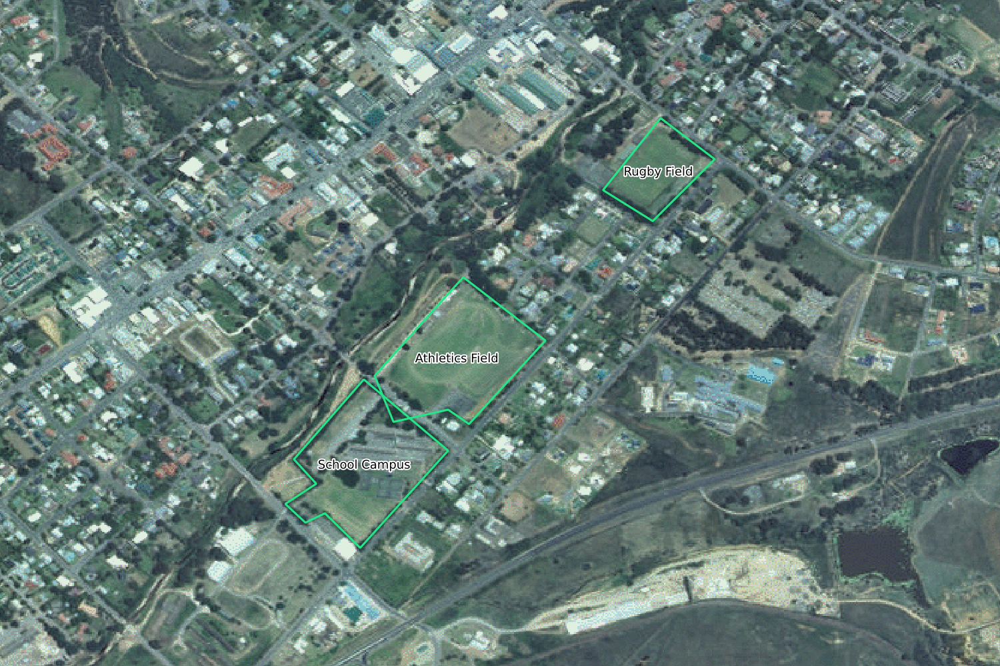
Школьная территория после изменения координаты вершины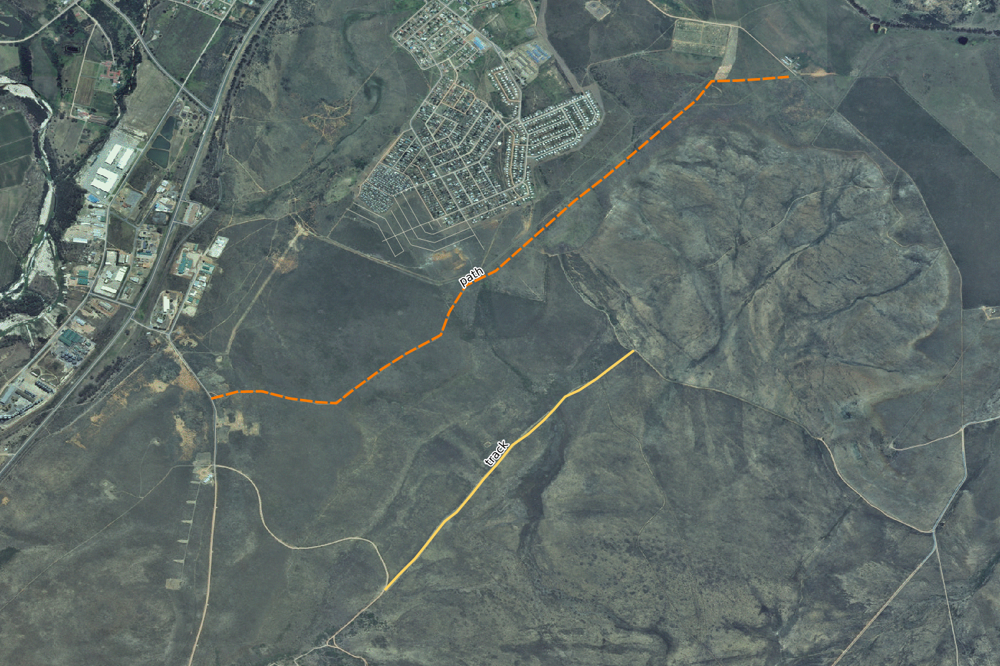
Две оцифрованные линии: path — оранжевый пунктир; track — жёлтая линияВ QGIS: для просмотра линий нажмите правой кнопкой на routes и выберите
Приблизить к слою. Для просмотра атрибутов нажмите F6 при выбранном слое.
Работа 6.1. Перепроецирование и преобразование данных
- В проекте карты мира совмещены
continents (EPSG:4326) и RSA (EPSG:3410), СК проекта — EPSG:6933.
- 4708 зданий экспортированы в
buildings_reprojected.shp, EPSG:32734 (WGS 84 / UTM zone 34S).
Отдельный проект показывает совпадение исходных и перепроецированных геометрий.
- В проекте с океанами применена Van der Grinten I. WKT из руководства встроен в проект и приложен отдельным файлом.
При экспорте в Shapefile длинные имена полей сокращаются по ограничениям формата.
Полные имена исходных атрибутов сохранены в data/training_data.gpkg.
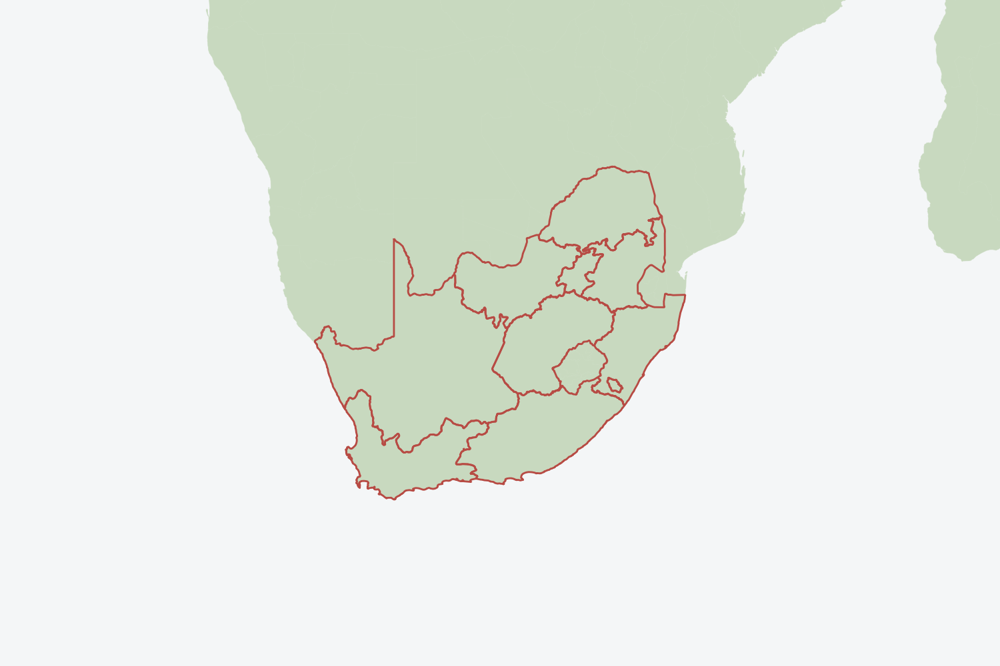
Южная Африка: перепроецирование на лету в EPSG:6933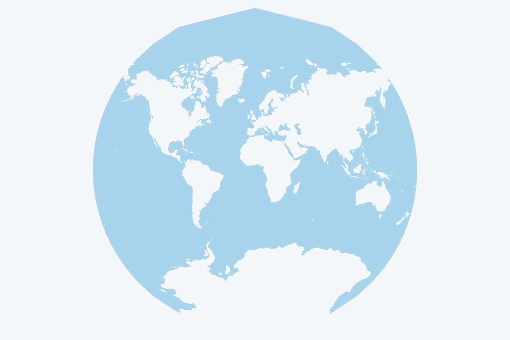
Пользовательская проекция Van der Grinten IДля повторения наблюдения за масштабом переключите СК проекта карты мира между EPSG:4326 и EPSG:6933,
установите масштаб 1:5 000 000 и перемещайте карту.
Работа 6.2. Векторный анализ
Все расчётные слои сохранены в Lab6/vector_analysis.gpkg в EPSG:32734, единица расстояний — метр.
Фильтр дорог: "highway" NOT IN ('footway', 'path', 'unclassified', 'track') AND "highway" IS NOT NULL.
После фильтра осталось 466 дорог; исходные входные слои также содержат 4708 зданий, 4 школы и 11 ресторанов.
| Шаг | Сохранённый слой | Объектов |
|---|
| Буфер дорог 50 м | roads_buffer_50m | 466 |
| Объединение буферов дорог | roads_buffer_50m_dissolved | 1 |
| Буфер школ 1000 м, 20 сегментов; объединение | schools_buffer_1km_dissolved | 1 |
| Пересечение буферов дорог и школ | road_school_buffers_intersect | 1 |
| Извлечение пересекающих зданий | well_located_houses | 3296 |
| Буфер ресторанов 500 м | restaurants_buffer_500m | 11 |
| Извлечение зданий у ресторанов, до фильтра площади | houses_restaurants_500m | 1247 |
| AREA = $area; фильтр "AREA" >= 100; экспорт | solution | 996 |
Итог — 996 зданий. Каждый объект итогового слоя проверен по расстояниям до ближайших дорог,
школ и ресторанов. Таблица проверки — solution_checks.csv.
Как в инструкции, расстояние до школы здесь определяется по прямой, через буфер; для отбора используется пересечение геометрий.
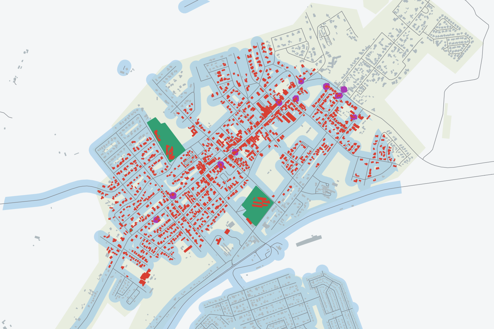
Красные здания — solution; серые — остальные здания; зелёные объекты — школы; фиолетовые — рестораныРабота 6.3. Сетевой анализ
Взята учебная сеть из network.gpkg. Начальная и конечная точки соответствуют координатам из диалога алгоритма в руководстве:
−337683.461296, 14891793.324881 и −338394.378190, 14891385.941820 (EPSG:32734).
| Режим | Слой | Результат |
|---|
| Кратчайший путь | shortest_path | 906,41 м |
| Быстрейший, постоянная скорость 50 км/ч | fastest_50kmh | 1,0877 мин |
| Пешком, постоянная скорость 4 км/ч | walking_4kmh | 13,5961 мин |
| Быстрейший с ограничениями из speed | fastest_speed_limits | 1,3085 мин |
| Зона достижимости от двух точек, 250 м | service_area_250m | 2 объекта; граничные узлы — service_boundary_nodes |
В маршрутах времени поле cost выражено в часах; добавлено поле minutes = cost * 60.
Фиолетовый путь — кратчайший, зелёный — быстрейший с ограничениями скорости. Эти маршруты различаются.
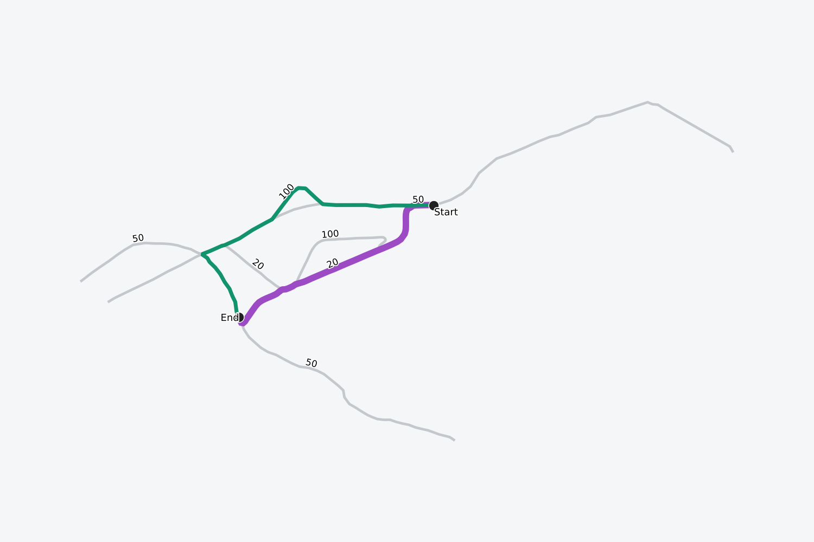
Кратчайший и быстрейший маршруты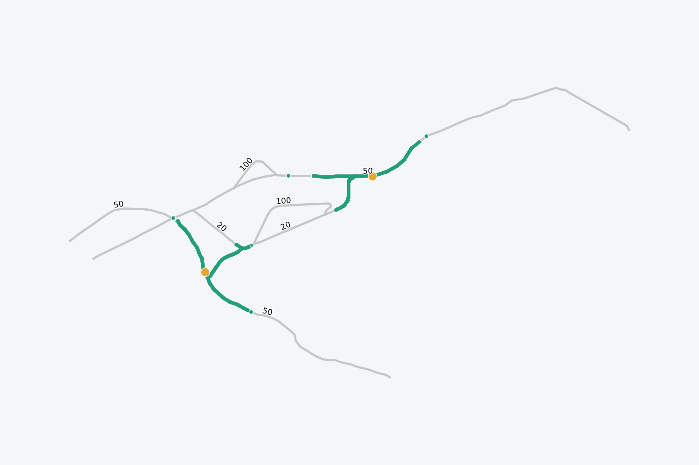
Участки сети в пределах 250 м от каждой исходной точкиВ QGIS: слои маршрутов включаются и выключаются флажками. Для просмотра зоны достижимости
отключите маршруты и включите service_area_250m, service_boundary_nodes и network_points.
Работа 6.4. Пространственная статистика
Построена выпуклая оболочка всех дорог. Внутри неё созданы 100 случайных точек и отдельная выборка из 10 000 точек;
высоты извлечены из srtm_41_19.tif в поле rvalue_1.
Для расстояний и интерполяции использована EPSG:32734; растр SRTM остаётся в исходной EPSG:32733.
Использован алгоритм Random points in polygons с фиксированным seed (202744 и 212644):
он создаёт равномерные случайные точки в той же области и позволяет воспроизвести выборку.
| Показатель высот, 100 точек | Значение |
|---|
| Количество / пропусков | 100 / 0 |
| Минимум / максимум | 25 / 833 м |
| Сумма | 15 450 м |
| Среднее | 154,50 м |
| Медиана | 129,00 м |
| Стандартное отклонение, генеральная совокупность | 119,99 м |
| Первый / третий квартиль (QGIS) | 103,00 / 163,00 м |
- Созданы три точки
distance_points и сводная матрица расстояний до двух ближайших точек выборки — distance_matrix_k2.
- Вычислены
mean_coordinates и hull_centroid; их положения различаются. - Анализ ближайшего соседа: индекс 0,9017,
наблюдаемое среднее расстояние 1 483,75 м,
ожидаемое 1 645,57 м, Z = -1,8812.
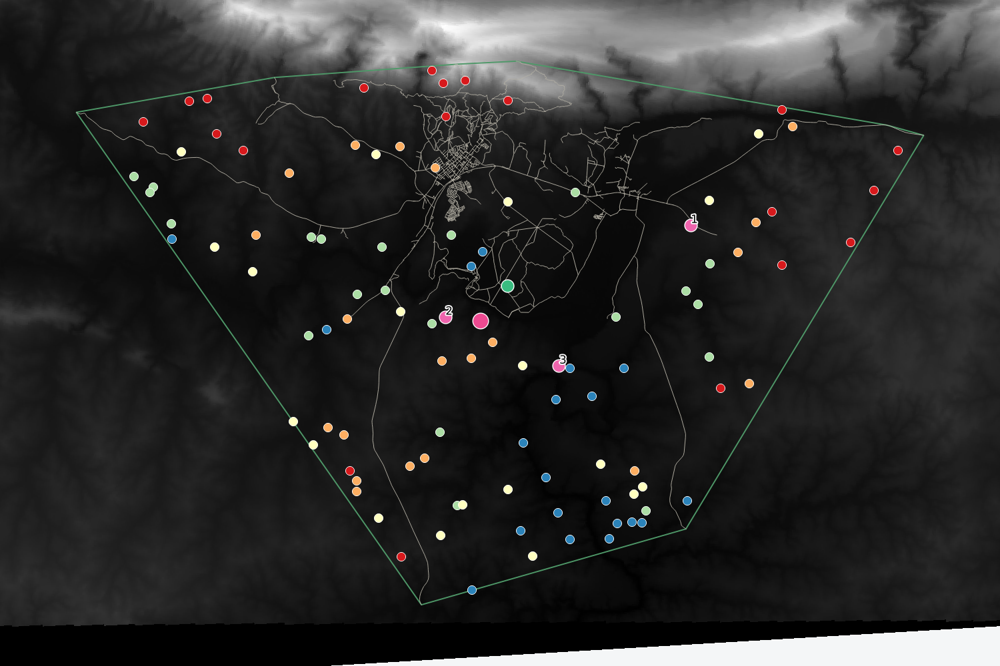
Выборка высот; розовый маркер — средний центр, зелёный — центроид; точки 1–3 — для матрицы расстоянийОтчёты алгоритмов: статистика высот,
ближайший сосед.
Гистограмма исходного SRTM
По всем пикселям исходного растра: минимум 0 м,
максимум 1 699 м, среднее 332,8479 м.
Графики показывают одни и те же значения с разным вертикальным масштабом.
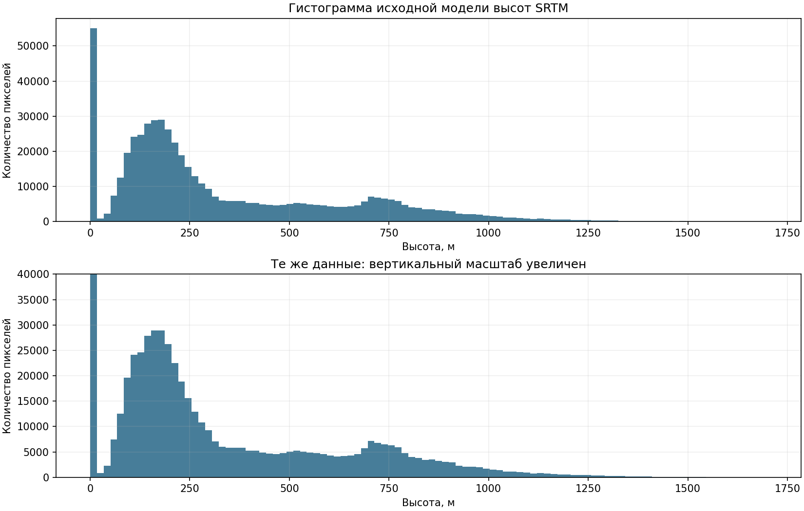
Экспорт гистограммы
Пространственная интерполяция
Применён Grid (IDW with nearest neighbor searching): power = 5, 12 ближайших точек;
для 100 точек smoothing = 0, для 10 000 точек smoothing = 2.
Радиус поиска покрывает всю область. Размер результата — 554 × 356 пикселей, около 80 м на пиксель.
Увеличенная выборка воспроизводит детали рельефа лучше. Все три изображения используют одинаковую шкалу 0–1700 м.
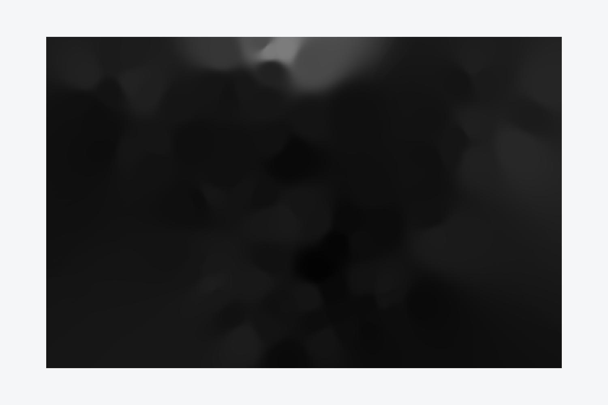
IDW: 100 точек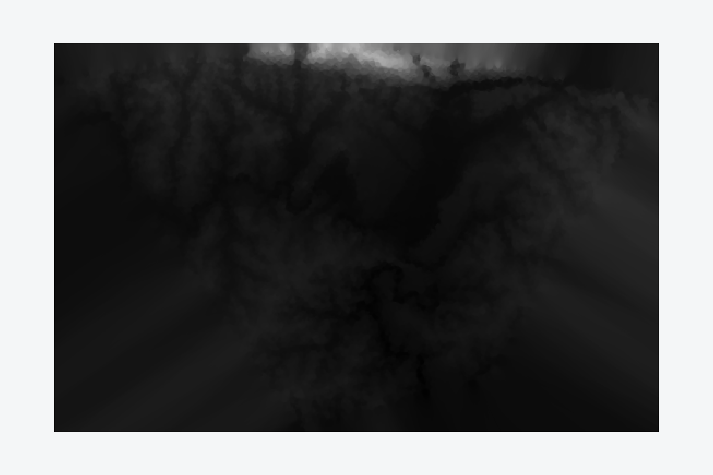
IDW: 10 000 точек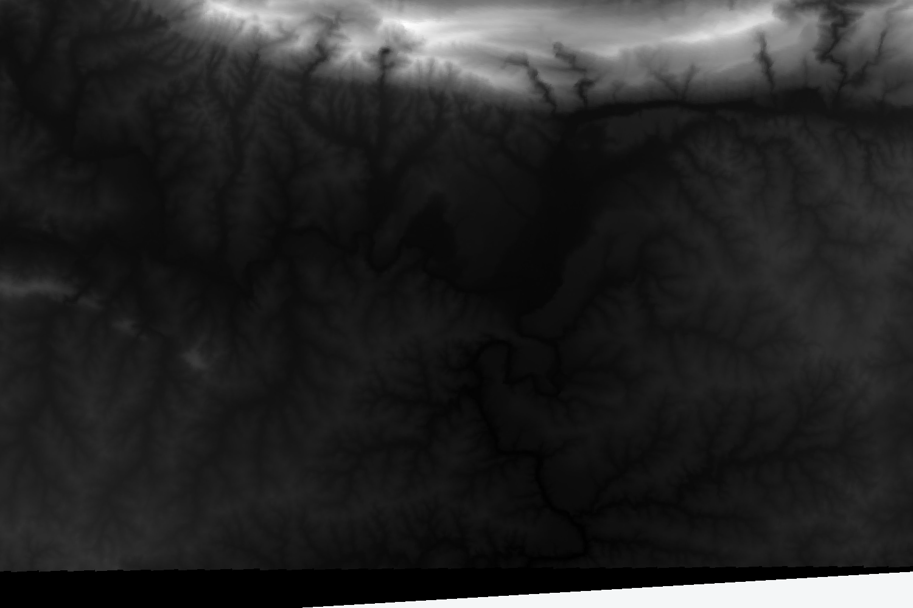
Исходный SRTM для сравненияВ QGIS: выключите исходный SRTM и включите нужный слой IDW; для сравнения переключайте их по одному.
Гистограмму можно пересчитать в свойствах SRTM, раздел Гистограмма.
Проверки и источники
Все семь проектов повторно открыты из копии в другом каталоге: слои найдены по относительным путям.
Базы GeoPackage прошли проверку целостности. Геометрии работы 5 и уникальность id проверены;
подсчитаны 100 и 10 000 точек; средние координаты и матрица расстояний проверены независимыми вычислениями;
оба растра интерполяции прочитаны и не содержат пропусков. Подробности — reports/validation.json.
Параметры выполненных алгоритмов сохранены в reports/processing_*.json.
Проверки выполнены в QGIS 3.40.6-Bratislava на Linux. Проекты предназначены для открытия в QGIS 3.44.14;
проверка именно на вашем Windows пока не проводилась.
Лицензия учебных данных прилагается в DATA_LICENSE.md. Геометрии и аналитические результаты в Lab5 и Lab6 — новые производные данные.
Исходные данные в data не редактировались.